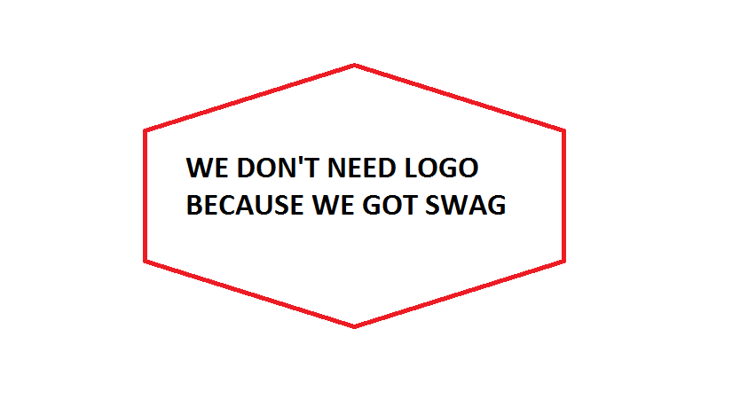
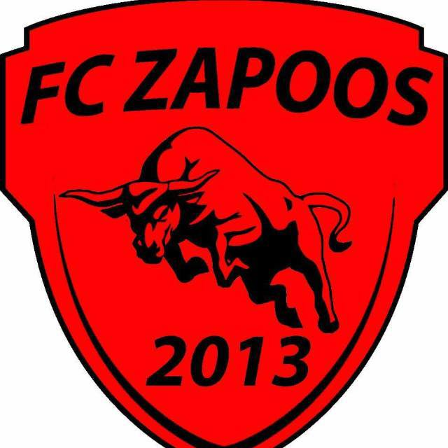

Ajalugu
FC Zapoos on 2013. aastal loodud jalgpallitiim, kuhu kuuluvad mõne arvates kõige ilusamad mehed maamunal. 2013. aastal asutasid 5 sõpra (tänaseni on tiimiga seotud Marken Malm, Robert Krikk ja Markus Somp) jalgpalliklubi, et hoida ennast liikuvuses ja saaks sõpradega koos olla. Koos mängiti neli aastat rahvaliigas, kuni otsustati 2017. aastal proovida kätt (jalga XD) Eesti meistrivõistlustel ametliku klubina. Debüüthooaeg IV liigas Põhi/ida tsoonis kulges soovitud rada pidi - põnevalt lõppenud hooaeg lõpetati algselt esikohaga, kuid seoses tahtmatu reeglirikkumisega võeti tiimilt viimases voorus saadud magus võit ära ning lepiti neljanda kohaga. Hooajal saavutati 10 võitu, 2 viiki ja 4 kaotust, kuid see oli piisav, et pääseda üleminekumängudele, kus kohtuti liigatase kõrgemal mängiva SK Auguriga. Esimeses mängus saavutatud põnev 3:2 võit viis meid sammu kaugusele liigatase kõrgemal pallimisest. Teises mängus ei jäetud midagi juhuse hooleks ja võeti kindel 3:0 võit, mis kindlustas zapoosikatele koha 2018. aasta III liiga Põhja tsoonis.
Debüütaasta III liigas algas tänu uutele täiendustele perfektselt, kui nopiti järjepanu võite ja oldi üks madalamate liigade hirmutavamaid tiime, kes oma päeval oleks võinud mängida kõigiga Eestis võrdselt. Kahjuks vigastused ja gümnaasiumilõpetamised jätsid oma märgi, mistõttu siples Zapoos oma aegade raskemail perioodil ainult kaotustes. Kuid seegi probleem sai seljatatud ja soliidse hooajalõpuga päästeti, mis päästa andis. Tasuks suurepärane 2. koht Põhja tsoonis, jäädes alla ainult vanadest legenditest koosnevale JK Retrole. Liigas jäi saldoks 13 võitu, 2 viiki ja 7 kaotust.
Karikasarjades oleme sattunud üpris tihti vastamisi liigatase kõrgemal pallivate tiimidega, kellega on peetud maha vägevaid lahinguid. Parimaks saavutuseks on siiani jäänud Väikeses karikas saavutatud 1/8 finaalipääs, kus jäädi alla lisaajal hilisemale poolfinalistile.
Nimi ja logod
Nimel Zapoos pole otsest tähendust ega pikka saamislugu - nimelt nagu tavalised teismelised poisid ikka, olid sõbrad koos Skype'is ja arutasid elust, kuni tekkis idee mõnda lahedat nime klubi jaoks otsima hakata. Pika mõtlemise tulemusena tuli pähe - kuninglikult kõlav "Zapoos". Järgmine etapp oli vastloodud tiimile leida logo, kuid see käis kiirelt ja esimene logo oligi tehtud pisikese Photoshop'i abiga.
Peatselt jõuti järeldusele, et tegemist pole just päris tõsiseltvõetava logoga ja tehti uus. Seekord oli olemas ka tagamõte, kui logoks sai pull. Sellega anti teada, et tegemist on pullide vendadega. XD, great pun, i know. Logo nägi välja alljärgnev.
Antud logo oli tiimi saatjaks terve rahvaliiga perioodi ja esimese hooaja meeste liigas ehk põhimõtteliselt neli aastat. Siis juhtus aga see, et süüdistati plagiaadis, kus Rakvere Tarva korvpallimeeskonnal oli täpselt samasugune pull logol. Kuna tegemist oli juba mitmeid aastaid Eesti tippu kuulunud meeskonnaga, siis otsutati ise oma lugu ära muuta. Seekord ka reaalse tagamõttega. Zapoos nimelt on hispaania keeles konn, magu meie välismaiste juurtega mängijad hästi teavad. Siis oli ka konn ainuke loogiline valik. Kuigi põnevas hääletuses osalesid veel kuked, ninasarvikud ja isegi kahuriga konn. Kae logo altpoolt.